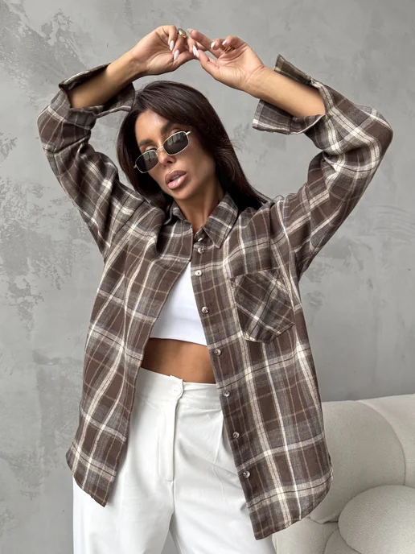

Рубашка в клетку оверсайз
2 262 ₽

ESSADORO · АРТ. 346609393
1 947 ₽
Эта рубашка в клетку из хлопка идеальна на лето или весну. Дизайн в клеточку придает элементы школьной классики и подойдет девочкам для учебы и прогулок. Данный принт – тренд 2026 года. Что делает эту модель базовой и универсальной как для повседневного гардероба, так и для домашнего стиля. Рубаха выполнена в свободном крое с воротником-стойкой и манжетами на рукавах. Ткань похожа на фланель. Идеально подходит не только для весенних дней, но и для лета, осени, например под лосины. С этой рубашкой можете собирать стильные зимние образы. Есть большие размеры, поэтому подойдет как для женщин пышной фигуры, так и для беременных. Отлично дополнит кэжуал (casual) и молодежный y2k стиль. В широкой рубашке с карманами будете чувствовать себя модно на прогулке или работе. Эта свободная женская одежда подойдет для девушек невысокого роста и подросткам. Дополните образ модными аксессуарами и вы будете в центре внимания. Легкая хб ткань подарит ощущение комфорта даже в самый жаркий летний день. Станет универсальным элементом вашего гардероба и подойдет для любого случая жизни, особенно, если бы любите объемный oversize и стиль олд мани (old money). Ее можно носить застегнув на пуговицы или на запах или на выпуск. Сочетайте фланелевую рубашку с различными образами. Эта стильная модель подчеркнет женственность и придаст особый шарм. Не упустите возможность приобрести ее, чтобы создавать новые весенние и летние образы.
Оценок: 1 805
Покупатели отмечают свободную посадку, мягкость и плотность ткани. В отдельных отзывах упоминают катышки, несовпадение рисунка клетки и износ ткани на рукаве.
2 262 ₽
1 523 ₽
2 608 ₽